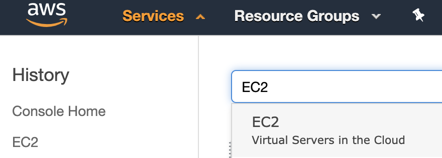
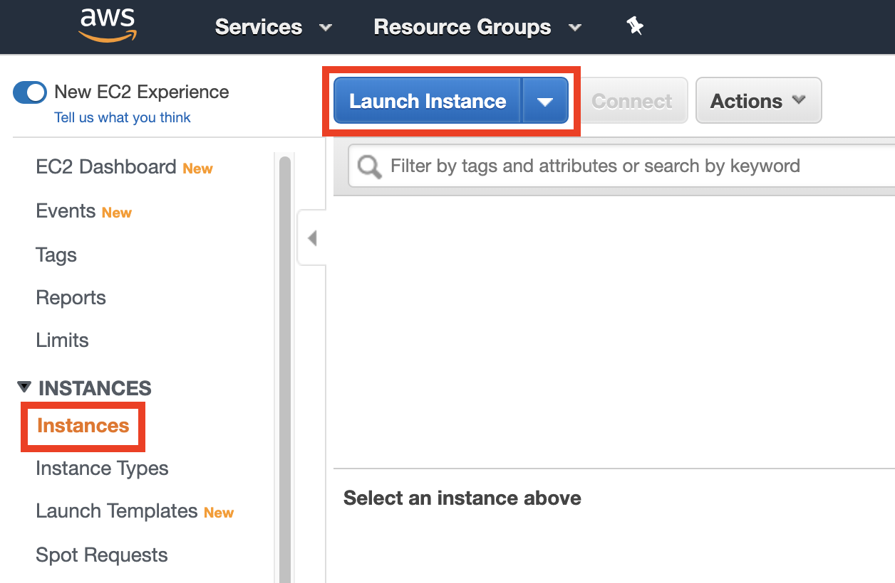
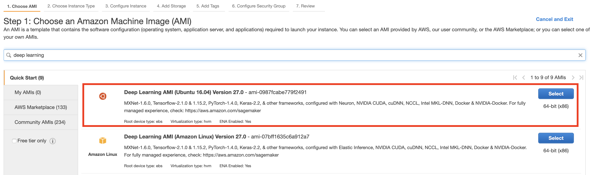
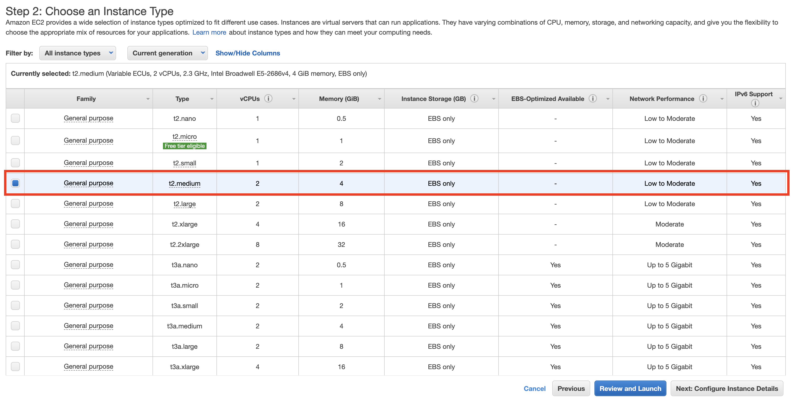
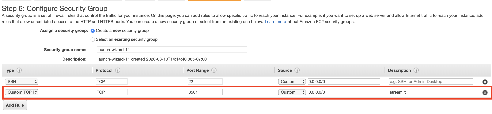
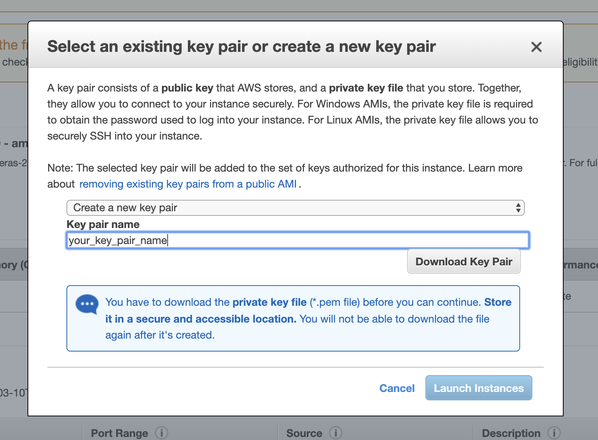
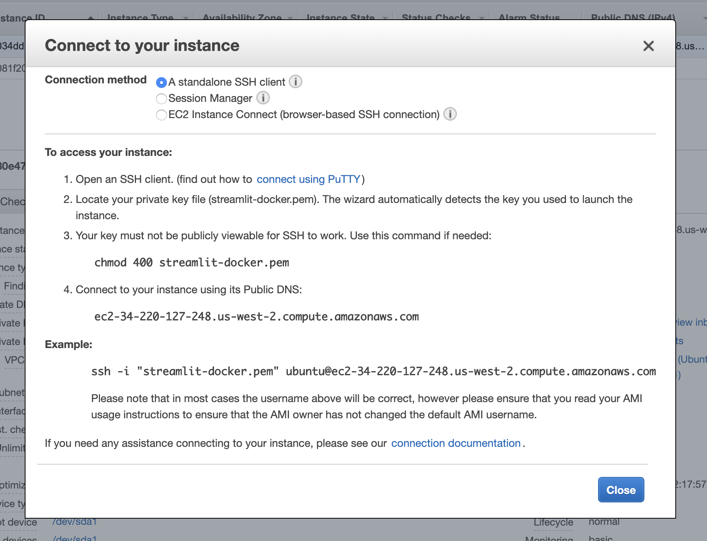

Deploying web apps with Streamlit, Docker, and AWS - part 2
Moving a web app into the cloud.
This is part 2 of a 3-part series. Make sure to read through part 1 first, then part 3 next!
Deploying your web app to the cloud with AWS
Now, we will walk through how to deploy your web app to the cloud and make it publicly available! Just like in part 1, these instructions are tailored to my small example, but should work for any streamlit app you’ve built.
EC2 set-up
We’ll start by heading over to aws.amazon.com/console. If you do not yet have an account, create one! After you’re logged in, locate the Services tab in the upper left-hand corner, then select EC2.

Next, you’ll want to use the tab on the left hand-side of the console to select Instances -> Launch Instance.

This will lead you to a screen prompting you to “Choose an Amazon Machine Image”. There are many options to choose from here, but our life will be made simplest by choosing the Deep Learning AMI (Ubuntu) AMI. Using this image does introduce a bit of extra overhead, however, it gurantees us that git and Docker will be pre-installed, so it will be our choice.

After this, we will choose the type of instance to use. To ensure that we’ll have enough space to build and run our Docker image, it’s a safe (and cheap) bet to pick a t2.medium instance.

From here, you can skip all the way to step 6 in launching the instance, which is where you’ll “Configure Security Group”. By default, all ports on our EC2 instance, other than 22, are closed to the public. In order to make our streamlit app publicly available, we need to open up port 8501. We can do so by creating a custom tcp rule, as pictured below.

With that set, you can click launch.
Lastly, we will need to ssh into the instance to get the code to run our app in the cloud. This requires a key pair. You should be prompted to choose an existing key pair or create one. If you do not have an existing one, choose “Create a new key pair”, then download it. Now you’re ready to click Launch Instances.

Getting your web app in the cloud
At this point, your EC2 instance is being built and configured. You can follow its progress back in the AWS console. Once you see a green “running” icon next to your instance, you are able to toggle it, then click the Connect button near the top of the console. Follow AWS’s instructions (shown below) to ssh into the instance from your local terminal.

After sshing into the instance, there are a few options to get our code into the cloud. This tutorial will assume your code is in a public github repository, however, if necessary, you can scp your code directly from your local computer to your instance. For our purposes, we’ll use git clone
ubuntu@ip-172-31-10-244:~$ git clone https://github.com/collinprather/streamlit-docker.git
Now that our code is on the instance, we can use the 2 commands featured in part 1 to build, then run the image (output removed for brevity).
ubuntu@ip-172-31-10-244:~$ cd streamlit-docker/
ubuntu@ip-172-31-10-244:~/streamlit-docker$ docker image build -t streamlit:app .
ubuntu@ip-172-31-10-244:~/streamlit-docker$ docker container run -p 8501:8501 -d streamlit:app
Now, the web app will be served at http://<EC2 public IP address>:8501! The public IP address can be found under “IPv4 Public IP” in the AWS console. Once you’ve located it, pull open a web browser and verify that your app is running as expected!
Now, head over to part 3 to learn how to add a Postgres backend to this app!